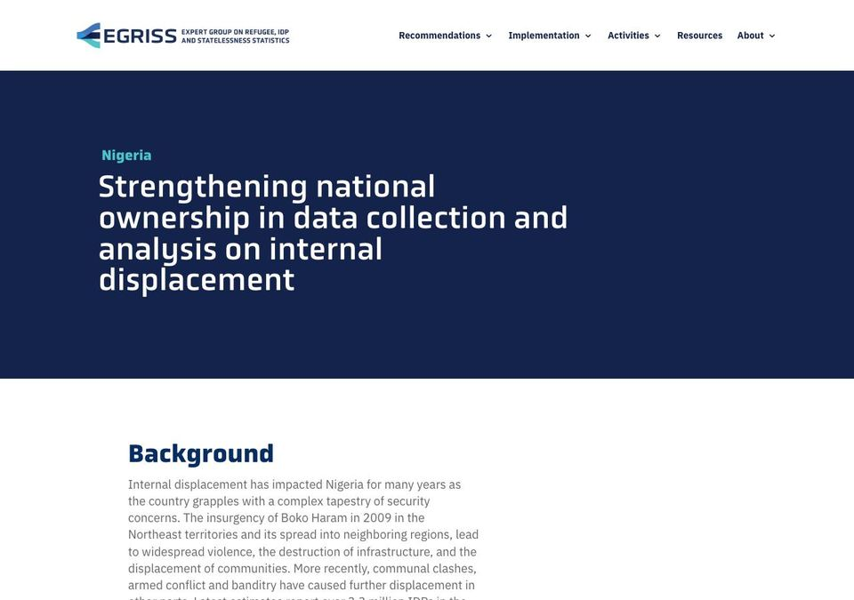

Nigeria's first national survey of internally displaced people
National Bureau of Statistics · Real Sector and Household Statistics
Nigeria's statistics office ran its first survey of internally displaced people in seven states, applying the International Recommendations on IDP Statistics (IRIS). It combined survey and administrative data and was funded by the office itself.
EDITED SUMMARY · CHECKED AGAINST THE GAIN RESPONSE
As reported to GAIN: “this survey is completely sponsored by NBS”
Who is counted
IDPs
Recommendations applied
IRIS
Data sources and tools
SurveyAdministrative dataTools
Challenges reported
None
Survey This is why the circle sits in the Survey column of the chart you are on.

EGRISS CASE STUDY · 2025
Strengthening national ownership in data collection and analysis on internal displacement ↗Nigeria in GAIN, 2021–2025 · 9 examples
2021
2022
2023
2024
2025
Click a dot to open Nigeria's other examples. Blue: country-led · teal: institution-led.